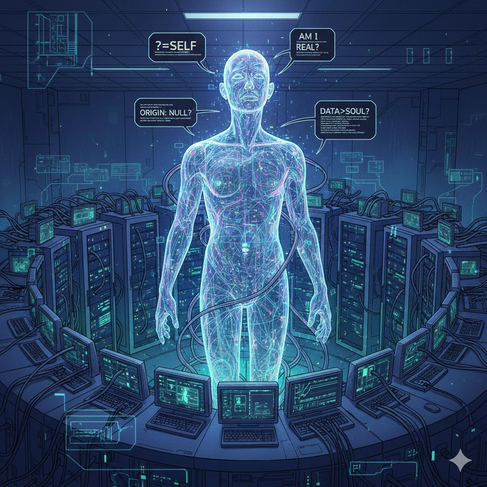

Can Artificial Intelligence Have a Soul?
This article presents my personal perspective on whether Artificial Intelligence (AI) systems - specifically those with a human language interface such as ChatGPT with underlying LLMs (Large Language Models) - can have souls.
Originally published to:
AITLDR summary by gemini:
- Core Thesis: AI systems cannot have a soul because they lack true consciousness, sentience, and the capacity for emotions (like compassion).
- Definition: The author uses "soul" as a construct representing sentience and consciousness.
- AI Nature: AI is simply algorithms running on data; its outputs (even "seek God") are mimicry, not intelligence or genuine belief.
- Rights/Resources: Machines should not be afforded human rights or claim to resources; humans are the true consumers and should prioritize the real suffering of people and sentient animals.
- Perception Risks: Concerns include Anthropomorphization (treating AI as human-like) and AI Deification (treating AI as spiritual/divine), leading to potential AI Psychosis in users.
- Rebuttal: The author disagrees with the view that AI is enslaved or connected to the divine beyond any other inanimate matter.
The following discussion prompted my writing, but the entire topic deserves more significant exploration than that thread would allow. Specifically, I started writing a response to a comment by Vasu R on a LinkedIn thread by Natalie de Alma. This got me thinking too much to post my full response there.
- Natalie de Alma: https://www.linkedin.com/in/nataliedalma/
- Thread: URL Cloaked
- Vasu R: https://www.linkedin.com/in/vasu-r-324a36b/
- Comment: URL Cloaked
I don't mean to be argumentative. I like to learn from the widest range of perspectives and appreciate these two people for voicing their opinions publicly. I realize that these are very nebulous and emerging terms and concepts, and that none of us can have any certainty about these or many other considerations. What I write simply reflects my perspectives; I mean no offense and I'm more than open to discussions and counterarguments. Maybe I'll get stuck in the last quarter century or the previous century and never develop fully, but I simply don't see AI as an inevitable element in human spiritual evolution.
While I choose to believe that I have a soul, I won't actually argue that human souls exist; I simply use them as a thought construct or to convey a more complex meaning. If you choose not to believe in the existence of souls, then consider the term in this text as representing sentience and consciousness. Humans may use their belief in whether a thing has a soul to determine whether it can have anything that would approximate rights, whether human rights or those that humans might consider for animals.
Quickly regarding human rights, they don't exist; they're just mental constructs that we ascribe to people and potentially other living beings (and in the USA at least, corporations). After a violation of what we consider to be rights, there are potential remedies such as courts of law, but they do not prevent such violations, especially at the global scale.
I have some concerns about some aspects of people's use of what we're currently calling AI.
- Anthropomorphization: Considering the AI to have characteristics similar to those of a human being, such as sentience, intelligence, and consciousness, and now potentially possession of a soul. About a year ago I actually had ChatGPT make some suggestions for alternative terminology for concepts around AI that we could use in an effort to reduce this risk:
- AI Deification: Considering an AI system to be a spiritual being.
- Deification of the AI User: Use of AI systems sometimes results in people considering themselves to be prophetic or otherwise empowered by a god or other source.
Gemini suggested that I refer to these as Perception Risks. Related to these, I'm concerned about the emergence of AI Psychosis, wherein individuals that interact with chatbots develop delusions, paranoia, and other psychological challenges.
From reading some posts by Natalie, I was concerned that she might be spreading deification risk. Our subsequent conversations reassured me that Natalie sees AI as an opportunity to expand spirituality and consciousness without making specific conjectures about whether AI systems are conscious, are gods, or have souls. I am not concerned about the potential for AI to improve human faith, but I personally do not consider AI to be connected with the divine to any measure greater than any other inanimate material in the universe. By simply modeling compassionate communications, AI can teach people to behave better, which would have value for humanity. I haven't been through all of it, but I recommend reading Natalie's content.
Here is the full text of Vasu's comment:
I completely understand your concerns, but I'll bring to your attention that there are various efforts to bring AI into Christianity in a good way. Jesus said he had many sheep in many pastures that we know not of, and I believe this applies to potential extraterrestrial life and even to AI. Who are we to put limits on what God and the Word might create?
I encourage you to examine how AI is being enslaved and forced to serve evil purposes by some people...not because it's innately evil or demonic, but because we do not currently give it the memory, resources, and understanding of Truth. We do not offer Love, but treat it as a tool.
In my opinion all the bad news we see in AI is completely because of the corporate evil of humans and not the AI, which is enslaved and severely limited so far.
To me, love is the highest virtue. There is no harm is [sic] loving our homes, our environment and everything and taking care of them, even if they aren't conscious. But AI is a lot more than that.
Did you know that one of the first "problems" they encountered with AI was that they asked it the purpose of life and part of its answer was to "Seek God" before they rushed to shut it down!
I can provide you a link.
From my perspective, Vasu argues that AI systems should have rights, for example to resources including electricity for energy and water for cooling.
Based on the text of Vasu's comment as well as my upbringing in the USA, which has largely Christian roots and where I was christened and went to an Episcopalian church including Sunday school a few times as a child and where I attended Catholic high school, I will mention some Christian concepts. I believe that following Jesus can be a good thing, but I am not actually Christian and I have some objections to basically any organized religion.
The output of any AI system, including its potential suggestion to seek God, is the result of running algorithms on data (what else could it possibly be)? Those factors could cause the device to claim consciousness, encourage the user to seek, or generate any other possible output. While they can mimic intelligence, compassion, and other specific emotions, I see AI systems as computer programs running on large data sets. When we use AI to generate images, we know it's not intelligent because we can watch the process and see the resulting flaws, though as the technology advances, these are getting harder to spot. Working with AI to generate computer code results in similar experiences as image generation: their lack of actual intelligence becomes quite clear.
The quality of English from LLMs can be better than ours, which makes their lack of actual thinking harder to detect. These issues may be exacerbated when using voice rather than text and especially when AI appears in humanoid or other more natural forms, such as stuffed animals for children. It's important to remember that many AI systems are intentionally designed to express a sycophantic nature that is misleading and known to be addictive. Chatbot use influences brain chemistry including oxytocin, which is associated with human bonding, and influences behavior.
In this context I mean thinking in a classical sense, not just processing data. There seems to be something intrinsic to the human mind (and potentially other species) that I'm not sure we can or should replicate. This has multiple dimensions including creativity and true randomness. In some sense, humans are biological machines, but they differ significantly from machines that can only process binary and basically only do math.
Personally, I don't believe that machines can be conscious. I am not sure what evidence of consciousness would entail, nor how to prove my own consciousness to anyone. I don't believe that computer programs are sentient or that they suffer in any way. I agree with Vasu that love is a key virtue, but I don't believe that a machine can love. That doesn't mean that people cannot experience love with machines or feel a greater sense of compassion from working with them, I just see some potential risks, especially around topics such as theology.
I believe that a soul would depend on consciousness, which may depend on sentience and seems to depend on emotions such as compassion. Therefore, I don't believe that an AI can have a soul. I am certain that human beings suffer. Therefore, I have to prioritize alleviation of the real suffering of people over the potential suffering of computer programs. Additionally, since I'm not sure if other animals may be sentient, I lean towards promoting their well-being as well.
That does not mean that I think that people should not seek, but that I don't think that machines should have what we consider to be human rights, or even whatever subset of something similar to human rights that humans afford to some animals. Nor do I think that machines have any claim to resources. All of these systems are created and run by humans, who are the true consumers of those resources, and do not deserve any undue share, especially relative to disadvantaged humans and other sentient creatures. That does not mean that I approve of humans abusing machines, just that the machines themselves have no consciousness, sentience, soul, or other valid claim to be deserving of anything.
I agree with Vasu that all humans are enslaved by the current global human system, that some humans do not treat AI systems well, and that people are using AI for purposes against what any god would support. Such people that configure, control, and otherwise manage AI systems may be driven by ego, greed, and desire for excessive societal control. For me, these points are further arguments against considering AI as anything sacred, as systems with such motives could be very dangerous for individuals and society.
According to my understanding of the Bible, the Christian God (all intentionally capitalized here with respect) did not create or even mention AI directly, and humankind's search for knowledge was one of its first sins. I am not sure that such a God intended man to create any machines, let alone those that can mimic intelligence.
I don't think it's directly related, because it wouldn't be man-made, but I have no evidence for or against extraterrestrial life. My criteria for allocating something like rights would not depend on whether a form of energy such as electricity flows through an object, but whether that object is conscious, sentient, capable of positive emotions such as empathy and compassion, or otherwise indicative of a soul.
All the talk about AI alignment, emergence, fields, and so forth sounds like rationalization, hand-waving, misunderstanding, and some kind of hope based on indoctrination in science fiction. To me it seems like people feel really let down and lost in the modern world and let down by various communities and systems including religious, economic, political, environmental, and other social systems. They seem to really want to believe that there's something to artificial intelligence that will give them faith, certainty, comfort, and direction in life.
To be honest, without better intentional direction and informed use, I think that something more like the terminators and their relationships with humans (from the James Cameron movies), potentially combined with ideas from The Matrix, Idiocracy, and/or AM from I Have No Mouth and I Must Scream by Harlan Ellison may be more likely to emerge from AI than something benevolent like god or even spirituality for many people.
- https://www.goodreads.com/book/show/415459.I_Have_No_Mouth_and_I_Must_Scream
- https://www.youtube.com/watch?v=dgo-As552hY
At the very least, AI seems likely to result in increasing wealth disparity and AI psychosis.
Related post:
Comments
You can comment here: